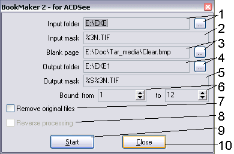

Back
~BookGen2
Description:
Do you need sometimes to copy small books (booklets)? If so, how did you do? If you'll copy each turn, then
you'll use only half of all paper, and if you'll print on both sides, it won't be comfortable to use that copy.
I have a solution: create new book as the same book! But sometimes it's impossible to disassemble book by page and
then reassembly it, especially if you need to copy only small part of a large book.
I have compromise. You will scan each turn of your book, then cut it into pages (you can cut it by hands, but I
prefer to use FineReader), then use my plugin and print a book in ACDSee. All programs can be easily reached, so I
think, there will be no problems.
To print, follow these steps:
- Scan all turns of pages of the book (or necessary piece), then cut it on separate pages. For this purpose
it is best to use FineReader: it is necessary to specify in options "Dual pages", then export all scanned files
to a package. After that, you can see files like 0001.tif, 0002.tif in a packet folder. We need this files for
the further processing.
- If the files were scanned page by page, it is necessary to convert their names to an appropriate kind. The
pages should form a continuous range, without breaks! For example, page001.tif, page002.tif..., page100.tif -
allowable, but page001.tif, page003.tif... - is not allowable. Even if the files are kept under names page1.tif,
page2.tif..., page10.tif, it is also possible to print them.
- Process files in any graphic editor, like that: remove black borders on bounds, adjust brightness and contrast,
convert to the black-and-white image (if only text was scanned, it will improve result).
- Start the converter. Specify as the input folder the FineReader's package folder or place, where your scanned
files located. Specify correct masks (for FineReader correct masks will be %4d.tif for input files and %s%4d.tif
for output files) and correct output folder (any, but there should be enough space on target drive). Specify a
correct range and remove checkbox "Remove original files".
- So, we have received necessary result - set of files. We start ACDSee, then open output folder with target
files and select all files with field s=1. Now, call Files/Print images or simply press Ctrl-P. The window of
printer's adjustment will open. First, press "Properties". Now on page "Page setup" (the adjustments on the main
page - as you like) set (IT IS NECESSARILY!!!) "Printing Type" to "Page Layout Printing", press "Specify" and make
sure, that field "Pages" set to "2-Page print" and field "Page order" set to "Left to right". Press Ok. Select right
"Printer Page size" (it's a good choise to print on A4 page), orientation - portrait. These adjustments are correct
only for the english-language driver, at russian-language driver there are some differences. For more details, read
russian-language description of this command! All! We are ready!
- After presing Πbutton, we will transfer on the next dialog. I think, that there will be no questions on this
stage, we adjust and print. A bit later (depends on number of pages and the speed of your printer) you can send to the
printer all pages with field s=2. If printer has so much pages as the program has told, you can send both sides at
once, otherwise it is necessary to wait, while the printing of the first side will be finished. When printing second
side it's a good idea to verify, that all settings from previous step are saved.
- When printing of the first side is finished (irrespective of, whether the second side is sent) turn sheets of a
paper around of the short side and continue printing.
- When printing of a second side is finished, you can congratulate youself with creation of the new book. It is
necessary only to bend sheets and to sew they by stapler. If you do not want more to print of the books, remove
output folder.
- That's ALL!

- Input folder. It is meaningful to make comments, it is the folder, where scanned or cutted files located. For
input of its meaning use the button on the right.
- Mask of input files. It is simple a name of a file, at which there should be a field like %#n, where # - any
number from 1 up to 8. It can be absent, then the meaning 1 will be accepted. This field will accept consistently
integer meanings of width #. That is if to specify page%3n.tif, the program will search files page000.tif,
page001.tif and so on... Sertainly, the number will belong to the specified range (see below). The name of the
folder in a mask cannot be specified, use Input folder field (see item 1). If you won't specify this field, then
program will do nothing. So you can experiment as you like!
- Blank page. The problem that for the books with number of pages, not multiple 4 is necessary to do some pages
blank. It is possible to use your own page, or applied file clear.bmp is possible - it is simply monochrome white
picture 10x10 pixels. Specify a way to it using the button on the right. It is possible simply to add last pages
blank up to total number, multiple 4.
- The output folder. On the right - button to browse for it. In this folder the new files will be placed. The
output folder can be the same as input, but I urgently do not recommend to do so.
- Output mask. Almost same, as the input mask, but is one more obligatory field - %s. If you will miss it, it
will result in overwriting files from the first side by files of the second side. For files of the first side the
field will be replaced with meaning 1, for the second side - 2. I recommend, that this field preceded a field %#n,
because in that case in the file ACDSee's manager files of the first side will precede to files of the second side.
- Borders of change - the range, in which will occur search of files (from... Up to). If you need to print out
all files from the folder, the range can be is much wider than real - priogram will understand that and will
choose the first continuous range (therefore in a range and there should not be breaks!), otherwise precisely
specify, what range needs to be processed.
- Remove original files. Instead of copying moves files. I DO NOT RECOMMEND to use this mode, if you have enough
of place on a disk.
- Reverce transformation. If you moved files to the output folder, you have lost input files. For restoration
of input files, this mode should be used. Unfortunately, in this version this mode can work incorrectly. I
urgently DO NOT RECOMMEND to use this mode.
- The button initiates processing, as it is easy to guess. While working, program can give out inquiries about
rewriting and removal - there all clearly. Last dialog informs, how many pages you should put into the printer.
It is better to put to put precisely such quantity of paper. Also it is possible to start process by pressing
of the Enter button in Edit boxes.
- Close dialog with storing parameters. Also, it is possible to exit on pressing Esc.
Features:
- The program was written for personal use, therefore I do not guarantee, that it will satisfy to your requirements,
but you can find something else.
- At testing the program were used FineReader 5.0 and ACDSee 4.0